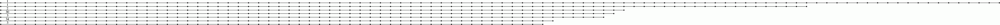
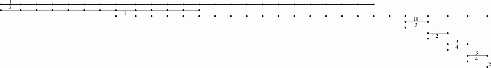
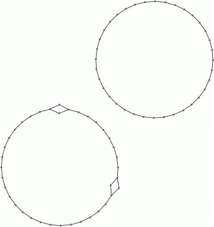
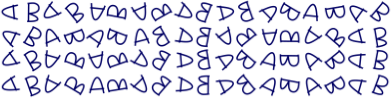
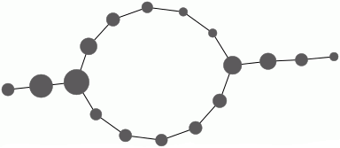
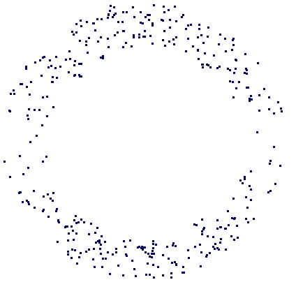
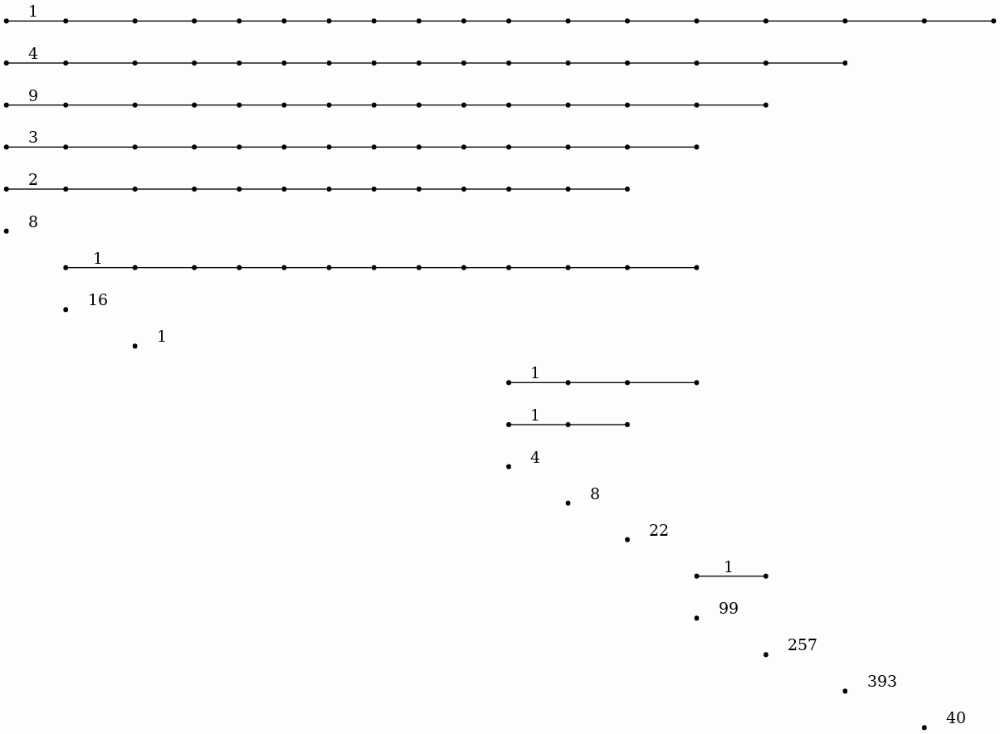
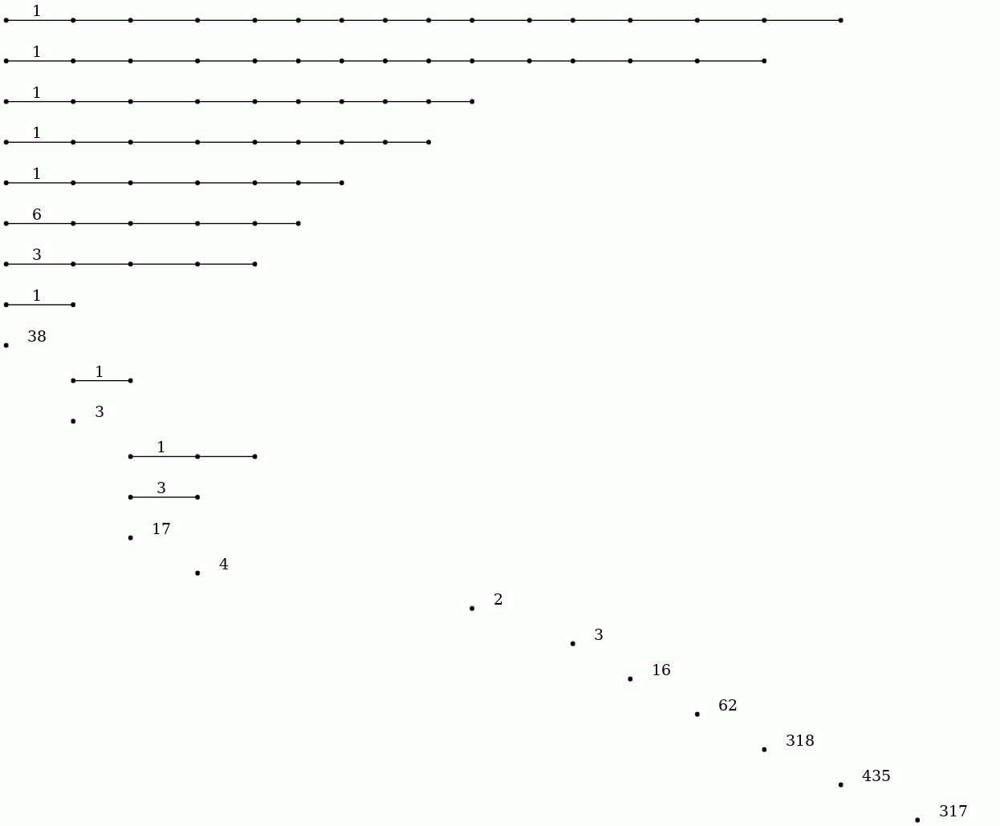
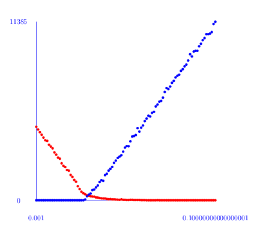

Pairwise distances between \(74\) points from some metric space have been recorded and stored in a \(74\times 74\) matrix \(D\). The following commands load the matrix, construct a filtration of length \(100\) on the first two dimensions of the assotiated clique complex (also known as the Rips Complex), and display the resulting degree \(0\) persistent homology as a barcode. A single bar with label \(n\) denotes \(n\) bars with common starting point and common end point.
gap> file:=HapFile("data253a.txt");; gap> Read(file); gap> G:=SymmetricMatrixToFilteredGraph(D,100); Filtered graph on 74 vertices. gap> K:=FilteredRegularCWComplex(CliqueComplex(G,2)); Filtered regular CW-complex of dimension 2 gap> P:=PersistentBettiNumbers(K,0);; gap> BarCodeCompactDisplay(P);

The next commands display the resulting degree \(1\) persistent homology as a barcode.
gap> P:=PersistentBettiNumbers(K,1);; gap> BarCodeCompactDisplay(P);

The following command displays the \(1\) skeleton of the simplicial complex arizing as the \(65\)-th term in the filtration on the clique complex.
gap> Y:=FiltrationTerm(K,65); Regular CW-complex of dimension 1 gap> Display(HomotopyGraph(Y));

These computations suuggest that the dataset contains two persistent path components (or clusters), and that each path component is in some sense periodic. The final command displays one possible representation of the data as points on two circles.
Each point in the dataset was an image consisting of \(732\times 761\) pixels. This point was regarded as a vector in \(\mathbb R^{732\times 761}\) and the matrix \(D\) was constructed using the Euclidean metric. The images were the following:

The following example reads in a set \(S\) of vectors of rational numbers. It uses the Euclidean distance \(d(u,v)\) between vectors. It fixes some vector $u_0\in S$ and uses the associated function \(f\colon D\rightarrow [0,b] \subset \mathbb R, v\mapsto d(u_0,v)\). In addition, it uses an open cover of the interval \([0,b]\) consisting of \(100\) uniformly distributed overlapping open subintervals of radius \(r=29\). It also uses a simple clustering algorithm implemented in the function cluster.
These ingredients are input into the Mapper clustering procedure to produce a simplicial complex \(M\) which is intended to be a representation of the data. The complex \(M\) is \(1\)-dimensional and the final command uses GraphViz software to visualize the graph. The nodes of this simplicial complex are "buckets" containing data points. A data point may reside in several buckets. The number of points in the bucket determines the size of the node. Two nodes are connected by an edge when their end-point nodes contain common data points.
gap> file:=HapFile("data134.txt");; gap> Read(file); gap> dx:=EuclideanApproximatedMetric;; gap> dz:=EuclideanApproximatedMetric;; gap> L:=List(S,x->Maximum(List(S,y->dx(x,y))));; gap> n:=Position(L,Minimum(L));; gap> f:=function(x); return [dx(S[n],x)]; end;; gap> P:=30*[0..100];; P:=List(P, i->[i]);; gap> r:=29;; gap> epsilon:=75;; gap> cluster:=function(S) > local Y, P, C; > if Length(S)=0 then return S; fi; > Y:=VectorsToOneSkeleton(S,epsilon,dx); > P:=PiZero(Y); > C:=Classify([1..Length(S)],P[2]); > return List(C,x->S{x}); > end;; gap> M:=Mapper(S,dx,f,dz,P,r,cluster); Simplicial complex of dimension 1. gap> Display(GraphOfSimplicialComplex(M));

The datacloud \(S\) consists of the \(400\) points in the plane shown in the following picture.

The following example reads in a digital image as a filtered pure cubical complexex. The filtration is obtained by thresholding at a sequence of uniformly spaced values on the greyscale range. The persistent homology of this filtered complex is calculated in degrees \(0\) and \(1\) and displayed as two barcodes.
gap> file:=HapFile("image1.3.2.png");; gap> F:=ReadImageAsFilteredPureCubicalComplex(file,20); Filtered pure cubical complex of dimension 2. gap> P:=PersistentBettiNumbers(F,0);; gap> BarCodeCompactDisplay(P);

gap> P:=PersistentBettiNumbers(F,1);; gap> BarCodeCompactDisplay(P);

The \(20\) persistent bars in the degree \(0\) barcode suggest that the image has \(20\) objects. The degree \(1\) barcode suggests that \(14\) (or possibly \(17\)) of these objects have holes in them.
The following image was used in the example.
For a positive integer \(n\) and probability \(p\) we denote by \(Y(n,p)\) the Linial-Meshulam random simplicial 2-complex. Its \(1\)-skeleton is the complete graph on \(n\) vertices; each possible \(2\)-simplex is included independently with probability \(p\).
The following commands first compute the number \(h_i\) of non-trivial cyclic summands in \(H_i(Y(100,p), \mathbb Z)\) for a range of probabilities \(p\) and \(i=1,2\) and then produce a plot of \(h_i\) versus \(p\). The plot for \(h_1\) is red and the plot for \(h_2\) is blue. A plot for the Euler characteristic \(1-h_1+h_2\) is shown in green.
gap> L:=[];;M:=[];; gap> for p in [1..100] do > K:=RegularCWComplex(RandomSimplicialTwoComplex(100,p/1000));; > h1:=Length(Homology(K,1));; > h2:=Length(Homology(K,2));; > Add(L, [1.0*(p/1000),h1,"red"]); > Add(L, [1.0*(p/1000),h2,"blue"]); > Add(M, [1.0*(p/1000),1-h1+h2,"green"]); > od; gap> ScatterPlot(L); gap> ScatterPlot(M);

From this plot it seems that there is a phase change threshold at around \(p=0.025\). An inspection of the first homology groups \(H_1(Y(100,p), \mathbb Z)\) shows that in most cases there is no torsion. However, around the threshold some of the complexes do have torsion in their first homology.
Similar commands for \(Y(75,p)\) suggest a phase transition at around \(p=0.035\) in this case. The following commands compute \(H_1(Y(75,p), \mathbb Z)\) for \(900\) random \(2\)-complexes with \(p\) in a small interval around \( 0.035\) and, in each case where there is torsion, the torsion coefficients are stored in a list. The final command prints these lists -- all but one of which are of length \(1\). For example, there is one \(2\)-dimensional simplicial complex on \(75\) vertices whose first homology contains the summand \(\mathbb Z_{107879661870516800665161182578823128}\). The largest prime factor is \(80555235907994145009690263\) occuring in the summand \(\mathbb Z_{259837760616287294231081766978855}\).
gap> torsion:=function(n,p) > local H, Y; > Y:=RegularCWComplex(RandomSimplicialTwoComplex(n,p)); > H:=Homology(Y,1); > H:=Filtered(H,x->not x=0); > return H; > end; function( n, p ) ... end gap> L:=[];;for n in [73000..73900] do > t:=torsion(75,n/2000000); > if not t=[] then Add(L,t); fi; > od; gap> Display(L); [ [ 2 ], [ 26 ], [ 259837760616287294231081766978855 ], [ 2 ], [ 3 ], [ 2 ], [ 2761642698060127444812143568 ], [ 2626355281010974663776273381976 ], [ 2 ], [ 3 ], [ 33112382751264894819430785350 ], [ 16 ], [ 4 ], [ 3 ], [ 2 ], [ 3 ], [ 2 ], [ 85234949999183888967763100590977 ], [ 2 ], [ 24644196130785821107897718662022 ], [ 2, 2 ], [ 2 ], [ 416641662889025645492982468 ], [ 41582773001875039168786970816 ], [ 2 ], [ 75889883165411088431747730 ], [ 33523474091636554792305315165 ], [ 107879661870516800665161182578823128 ], [ 5588265814409119568341729980 ], [ 2 ], [ 5001457249224115878015053458 ], [ 10 ], [ 12 ], [ 2 ], [ 2 ], [ 3 ], [ 7757870243425246987971789322 ], [ 8164648856993269673396613497412 ], [ 2 ] ]
generated by GAPDoc2HTML